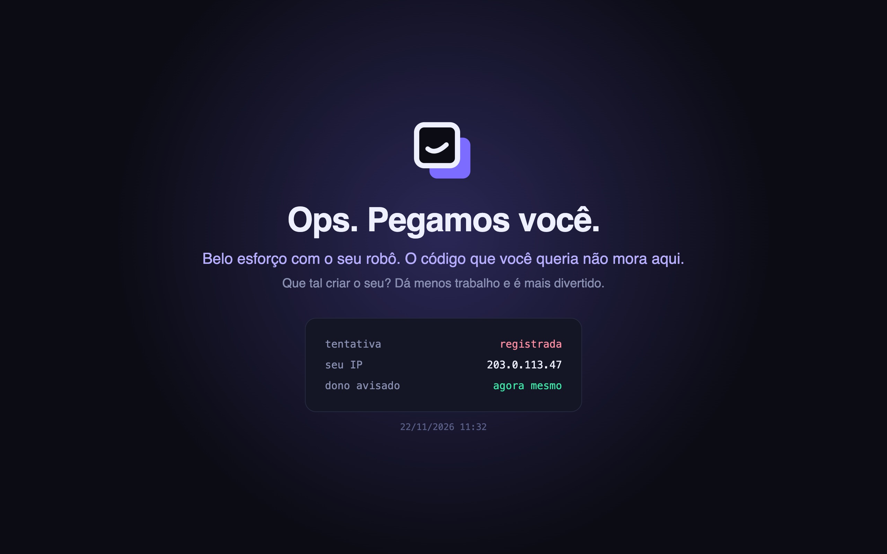
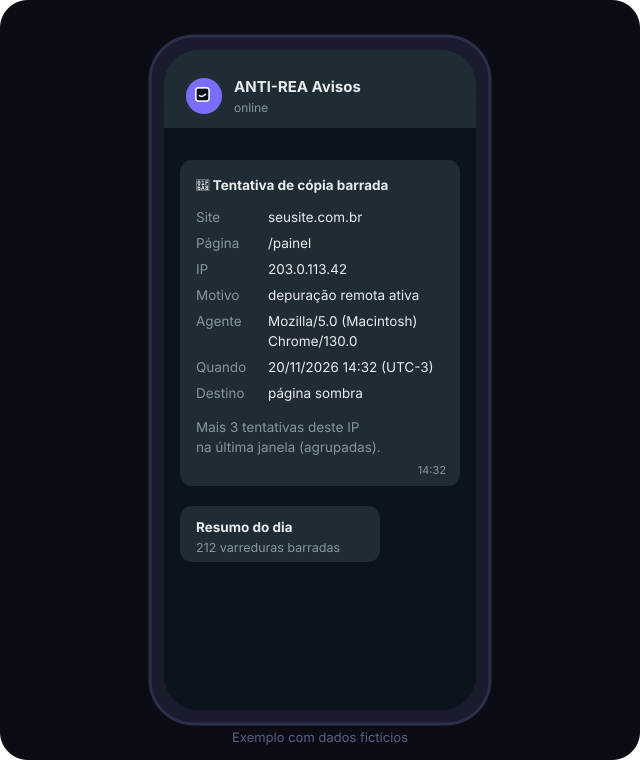
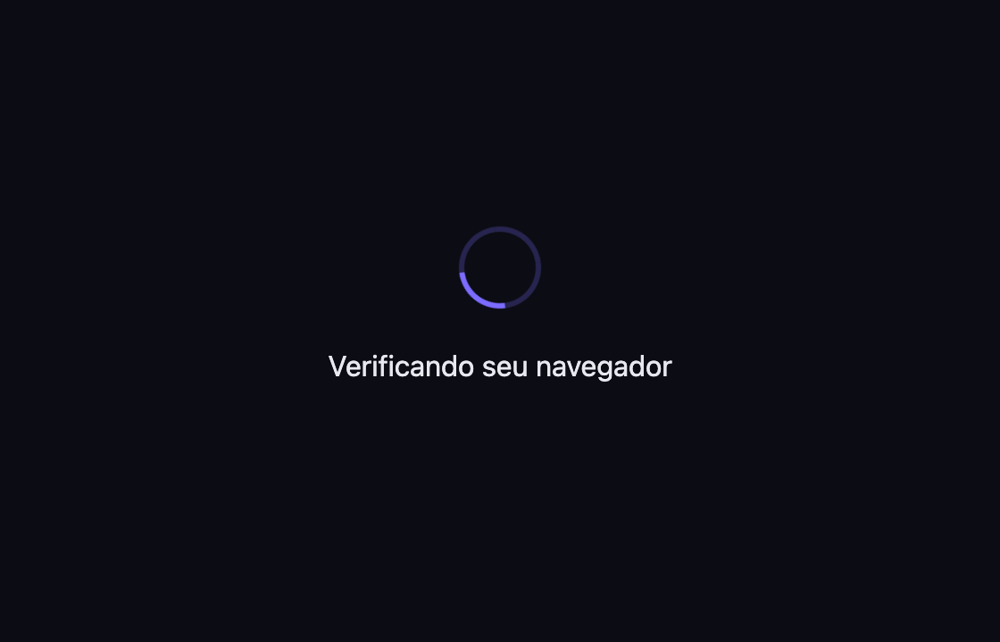
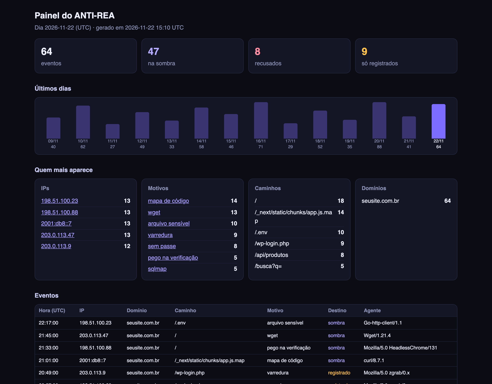
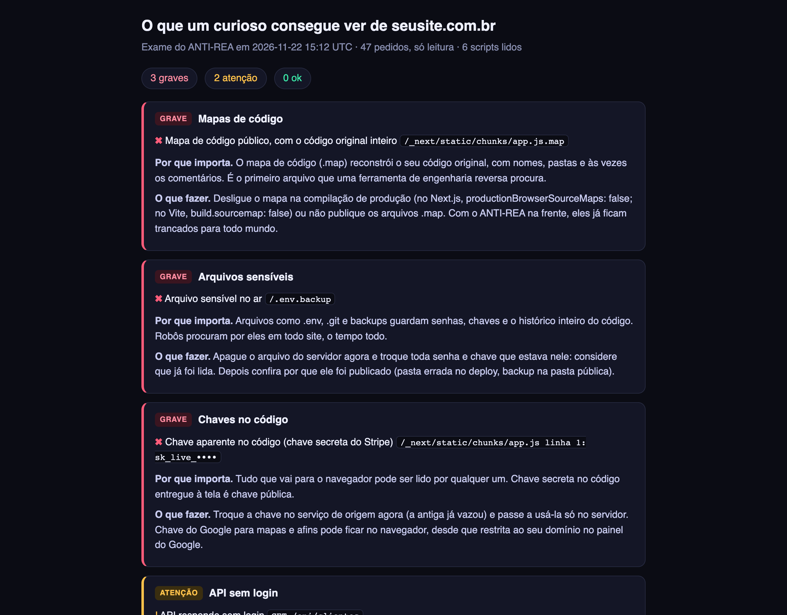
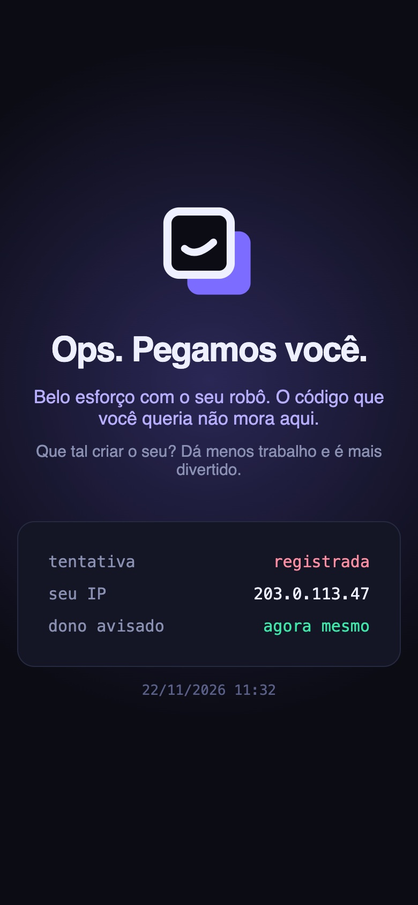
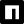

Página sombra
Robô copiador, navegador automatizado e quem abre o F12 veem só a mensagem sarcástica. Mensagem, cor e logo são seus para trocar.

v0.2.0 · código aberto · MIT
O ANTI-REA é um porteiro que fica na frente do seu site. Gente de verdade entra normal. Ferramenta de engenharia reversa, robô copiador e varredura de ataque caem numa página sombra, no mesmo endereço, e você recebe o aviso no celular na hora.
$ npx @jeipidevs/anti-rea init
Funciona com Next.js, WordPress, Laravel, HTML simples ou o que você tiver. Sem mexer em uma linha do seu código.
Como funciona
Ele olha quem está pedindo e o que está pedindo, antes de qualquer coisa chegar ao site.
Menos de um segundo. Quem passa ganha um passe assinado e navega livre por dias.
Google, Bing, Apple e Meta são confirmados pelo endereço oficial. Busca e anúncio seguem funcionando.
No mesmo endereço, sem redirecionar. Nada do site real vai junto, e você recebe o aviso.
Recursos
Robô copiador, navegador automatizado e quem abre o F12 veem só a mensagem sarcástica. Mensagem, cor e logo são seus para trocar.

WhatsApp, Telegram ou webhook, com IP, página, motivo e horário. Tentativas repetidas chegam agrupadas: seu celular não vira sirene.

 webhook
webhook

Para todo mundo, em qualquer pasta.
Depois da verificação, a guarda confere a aba a cada 0,5 s enquanto ela está visível. Num aparelho com a CPU 6 vezes mais lenta, isso dá 0,7% de CPU.
Só na primeira visita. Robôs de prévia de link (WhatsApp, Telegram) recebem o título, a descrição e a imagem do site.

Por dentro
Capturadas do próprio código, com dados de exemplo.



Instalar
start. Ele passa a responder na porta 8080.Precisa de Node.js 22 ou mais novo, ou de Docker. Guia completo de instalação
$ npx @jeipidevs/anti-rea init
ANTI-REA · assistente de instalação
✔ Endereço do seu site? http://localhost:3000
✔ Domínio público? seusite.com.br
✔ O que fica na frente do porteiro? nginx, Traefik ou painel
✔ Onde quer receber os avisos? WhatsApp
✔ Quem abre o F12 cai na sombra? sim
Pronto. Criei anti-rea.config.yml e .env
Seu link de dono (guarde, ele libera você):
https://seusite.com.br/.anti-rea/dono/••••••••
$ npx @jeipidevs/anti-rea start
Porteiro no ar em :8080, protegendo http://localhost:3000Novo na v0.2.0 · Exame do próprio site
O exame faz o que uma ferramenta de engenharia reversa faria, só que a seu favor: procura mapas de código, arquivos sensíveis no ar, API que responde sem login e chave secreta esquecida no código. Sai um relatório com o que fazer em cada item.
/.well-known/anti-rea.txt antes de começar.$ npx @jeipidevs/anti-rea exame https://seusite.com.br
$ npx @jeipidevs/anti-rea exame https://seusite.com.br
Dono confirmado pelo arquivo /.well-known/anti-rea.txt
O que um curioso consegue ver do seu site
✖ Mapa de código público /_next/static/chunks/app.js.map
✖ Arquivo sensível no ar /.env.backup
! API responde sem login GET /api/clientes
! Sem porteiro na frente do site
✔ Nenhuma chave aparente no código
2 graves · 2 atenção · 1 ok
exame-seusite.com.br-2026-11-22.htmlNovo na v0.2.0 · Painel de registro
Abra o seu link de dono e vá a /.anti-rea/painel. Para quem não é dono, o endereço nem existe:
responde 404 como qualquer outro. Sem domínio, anti-rea painel grava o mesmo painel num arquivo.
Nenhuma ferramenta impede 100% a cópia do que o navegador recebe. Uma pessoa paciente, com um navegador comum, sempre consegue salvar o que a página mostra. O ANTI-REA encarece, denuncia e engana quem tenta. A lógica do servidor nunca vai para o navegador, e o exame avisa se algo dela vazou. Desconfie de quem prometer site invisível.
Download

Node.js 22 ou mais novo.
npm install -g @jeipidevs/anti-rea
Abrir no npm
Imagem pronta no GitHub Container Registry.
ghcr.io/jeipidevs/anti-rea:v0.2.0
Ver a imagem
Release v0.2.0, licença MIT. Leia, mude e contribua.
git clone https://github.com/Jeipidevs/anti-rea
Baixar a v0.2.0
Créditos
Ideia, arquitetura e desenvolvimento do ANTI-REA, feito no Brasil.
O ANTI-REA nasceu estudando a lógica do REA (Reverse Engineer Anything) para saber como uma análise acontece e como se defender dela. É um projeto independente, sem ligação com o REA ou com seus autores.